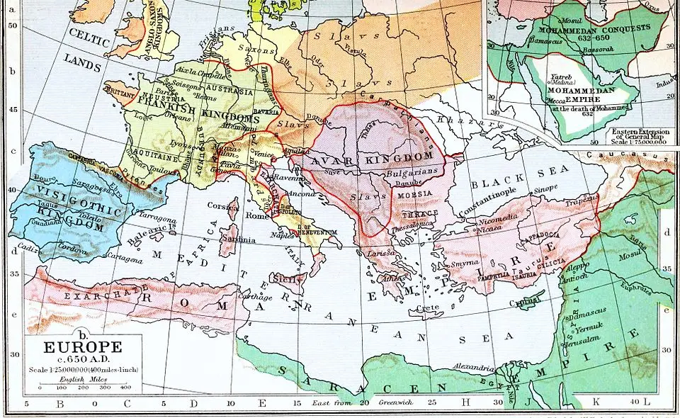
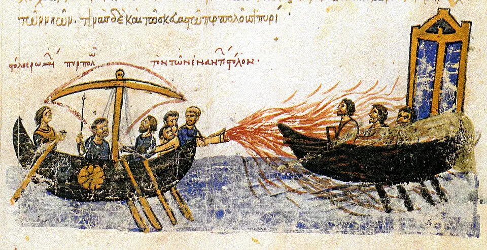
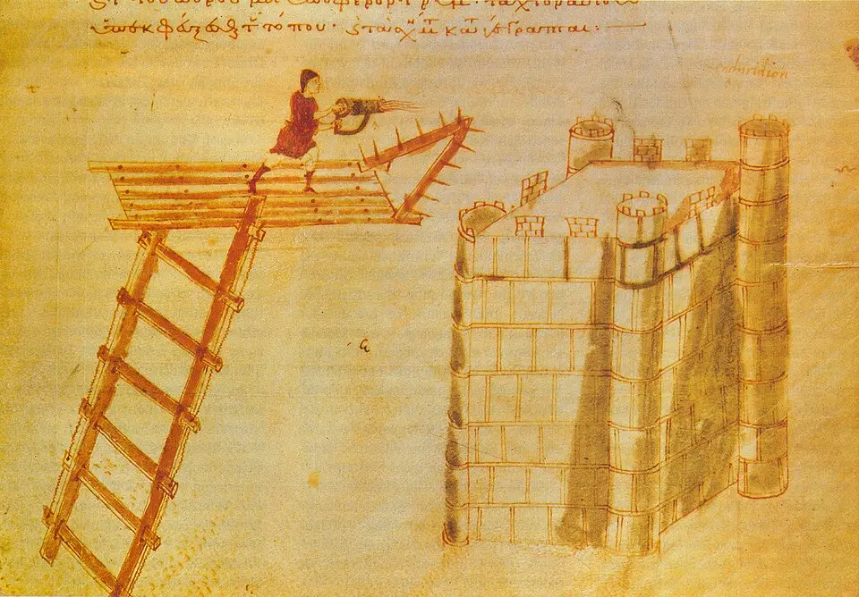
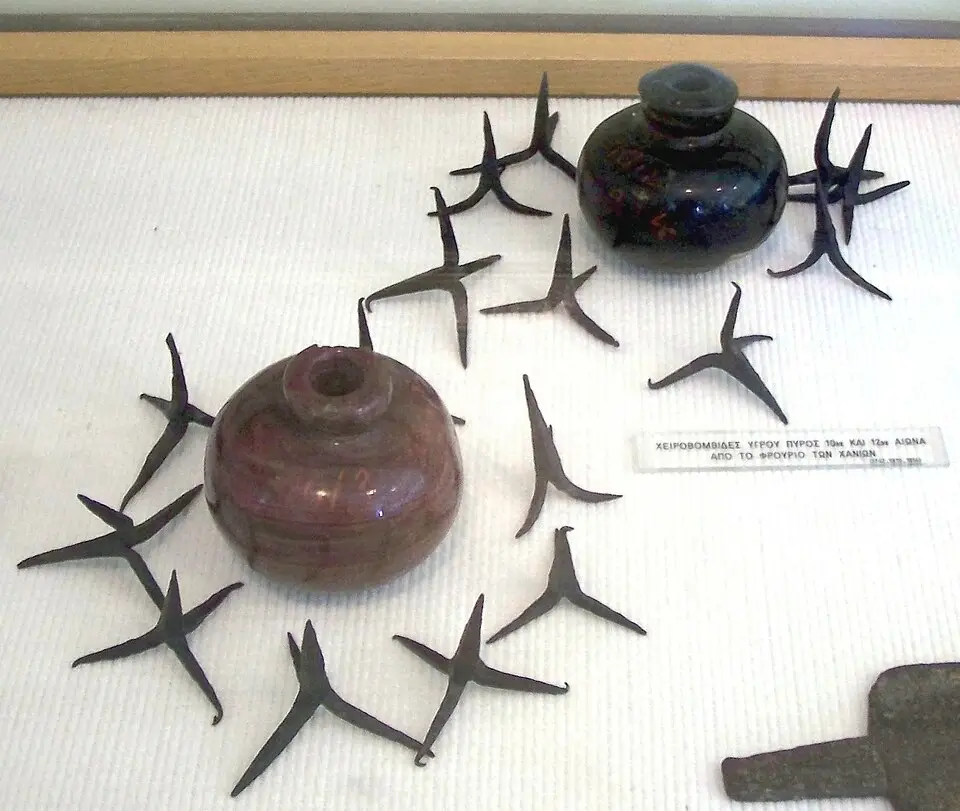

Lửa Hy Lạp: thứ vũ khí cháy trên mặt nước, công thức đã thất truyền
Khoảng năm 672, một người thợ chạy trốn từ Syria mang đến Constantinople một thứ lửa cháy cả trên mặt biển. Người Byzantine giữ bí mật kỹ đến mức chính họ cũng làm mất công thức.

Theo nhà biên niên Theophanes Xưng tội, khoảng năm 672 có một người thợ tên Kallinikos chạy từ Heliopolis ở Syria, vùng vừa bị quân Hồi giáo chiếm, sang đất Byzantine. Ông mang theo cách chế một thứ "lửa biển", đốt cháy thuyền Ả Rập cùng toàn bộ người trên thuyền. Thứ lửa ấy sẽ bảo vệ Constantinople suốt mấy thế kỷ. Rồi công thức của nó biến mất, và đến nay vẫn chưa ai tìm lại được.
Một đế quốc đang thua
Chỉ trong một thế hệ, Byzantine đã mất Syria, Palestine và Ai Cập vào tay người Ả Rập. Năm 655, hải quân Hồi giáo còn thắng lớn hải quân Byzantine trong trận được gọi là Trận Cột buồm. Khoảng năm 672, khalip Mu'awiya I của nhà Umayyad bắt đầu chiến dịch nhắm thẳng vào kinh đô.
Theophanes kể rằng từ năm 672 đến 673, hạm đội Ả Rập lập căn cứ dọc bờ Tiểu Á rồi vây lỏng Constantinople. Họ trú đông ở bán đảo Cyzicus gần đó và mỗi mùa xuân lại quay ra đánh thành. Cuối cùng, dưới thời hoàng đế Constantine IV, hải quân Byzantine dùng thứ chất lỏng mới để thiêu hạm đội Ả Rập. Quân Byzantine cũng đánh bại đạo bộ binh Ả Rập ở Tiểu Á. Năm 678, quân Ả Rập phải bỏ vây. Trên đường về Syria, phần còn lại của hạm đội gặp bão ngoài khơi Syllaion và gần như bị xóa sổ.
Nhiều tác giả chép rằng chỉ có cát, giấm thật chua hoặc nước tiểu để lâu mới dập được nó.
Lửa phun từ ống đồng


Người Byzantine không gọi nó là "lửa Hy Lạp". Họ gọi là "lửa biển", "lửa La Mã", "lửa lỏng", "lửa dính". Cái tên "lửa Hy Lạp" chỉ phổ biến ở châu Âu từ thời Thập tự chinh.
Các nguồn mô tả nó là chất lỏng, cháy được trên mặt nước, phát ra tiếng như sấm và nhiều khói. Trên biển, nó thường được phun từ một ống gọi là siphōn. Ống chính đặt dưới sàn cao ở mũi chiến thuyền dromon, nghĩa là "kẻ chạy", loại thuyền chèo chủ lực của hải quân Byzantine; thuyền lớn còn có ống phụ hai bên mạn. Người ta cũng đựng nó trong bình gốm để ném như lựu đạn. Nhiều tác giả chép rằng chỉ có cát, giấm thật chua hoặc nước tiểu để lâu mới dập được nó.
Vũ khí này giúp Byzantine đẩy lùi hai cuộc vây thành lớn của người Ả Rập, đánh tan hạm đội nổi loạn năm 727 và năm 821 đến 823, và thiêu thuyền của người Rus' trên eo Bosporus vào các năm 941 và 1043.
Bí mật được giữ như thế nào


Hoàng đế Constantine VII, trong cuốn sách viết cho con trai là Romanos II vào thế kỷ 10, dặn không bao giờ được tiết lộ cách chế lửa. Ông viết rằng bí mật ấy do một thiên thần trao cho Constantine Đại đế, kèm điều kiện chỉ được làm cho người Kitô giáo và chỉ trong kinh thành. Ông còn kể một viên quan nhận hối lộ để trao lửa cho kẻ thù đã bị "lửa từ trời" đánh chết khi sắp bước vào nhà thờ.
Nhưng bí mật thật sự nằm ở cách tổ chức. Lửa Hy Lạp là cả một hệ thống: chất lỏng, thiết bị đun nóng và tạo áp suất, ống phun, chiến thuyền chuyên dụng và đội lính phun được huấn luyện riêng. Mỗi người chỉ biết một phần. Năm 814, khi chiếm hai thành Mesembria và Debeltos, người Bulgar thu được 36 ống phun và cả một lượng chất lỏng, nhưng không dùng được.
Bằng chứng nói gì


Không có công thức nào còn sót lại. Ngay cả cuộc vây thành năm 674 đến 678 cũng chủ yếu dựa vào Theophanes, và năm 2010 nhà nghiên cứu James Howard-Johnston ở Oxford, rồi sau đó Marek Jankowiak, đã đặt lại câu hỏi về niên đại và cả sự tồn tại của nó khi đối chiếu với nguồn Ả Rập và Syriac. Nhà biên niên thế kỷ 11 George Kedrenos kể rằng con cháu Kallinikos, một dòng họ tên Lampros, đời đời giữ bí mật. Các học giả hiện đại cho chuyện này khó tin. Theophanes cũng chép rằng thuyền có ống phun lửa đã xuất hiện vài năm trước khi Kallinikos tới, nên có thể ông chỉ cải tiến một vũ khí đã có. Nhà sử học James Partington cho rằng nó là thành quả của các nhà hóa học ở Constantinople, chứ không phải của một người.
Trong nhiều thế kỷ, giả thuyết phổ biến nhất là lửa Hy Lạp chứa diêm tiêu, tức là một dạng thuốc súng sơ khai. Ngày nay phần lớn các học giả cho rằng thành phần chính là dầu mỏ thô hoặc đã tinh chế, trộn với nhựa cây, gần giống bom napalm hiện đại. Byzantine có dầu mỏ từ các giếng tự nhiên quanh Biển Đen. Các nhà nghiên cứu John Haldon và Maurice Byrne đã dựng lại trên giấy một bộ máy giả định gồm bơm đồng tạo áp suất, lò đun dầu và vòi phun xoay được.
Lửa tắt khi nào
Công chúa Anna Komnene còn tả lửa này trong trận hải chiến với người Pisa năm 1099. Nhưng khi quân Thập tự chinh thứ tư vây Constantinople năm 1203, không nguồn nào xác nhận Byzantine còn dùng nó. Có thể đế quốc đã suy yếu quân bị, có thể họ mất vùng cung cấp nguyên liệu, cũng có thể bí mật đã thất truyền.
Một chi tiết bên lề: đến thế kỷ 19, có người Armenia tên Kavafian tìm đến chính quyền Ottoman, nói mình đã chế được một loại lửa Hy Lạp mới. Ông không chịu tiết lộ thành phần và đòi được chỉ huy việc sử dụng. Theo các ghi chép, ông bị chính quyền đầu độc chết mà bí mật vẫn chưa ai biết.
Lửa Hy Lạp là vũ khí có thật, được nhiều nguồn mô tả và đã cứu Constantinople ít nhất hai lần; điều chưa ai trả lời được là nó được làm từ gì.